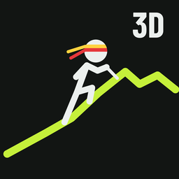
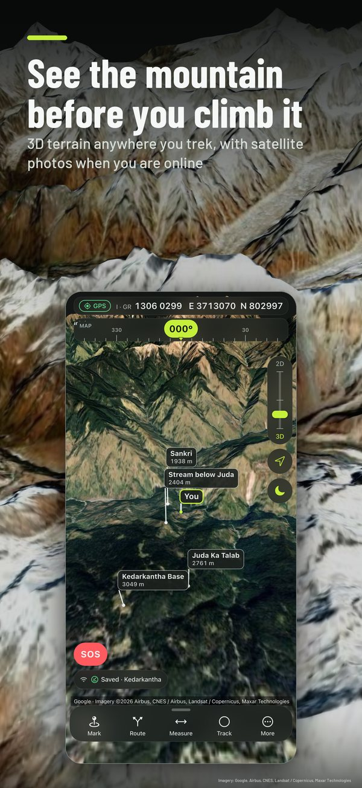
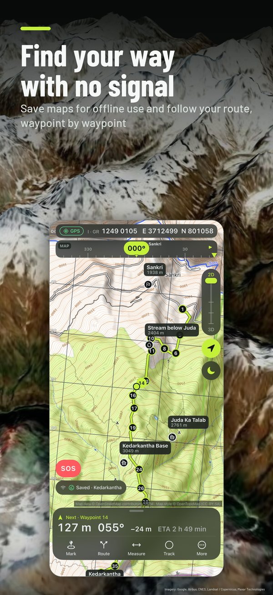
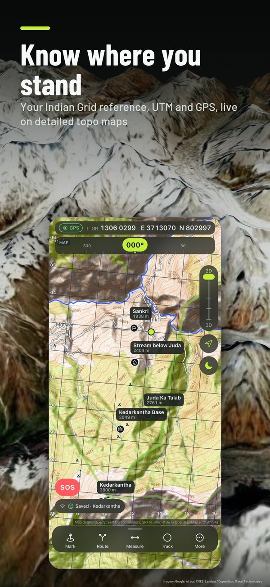
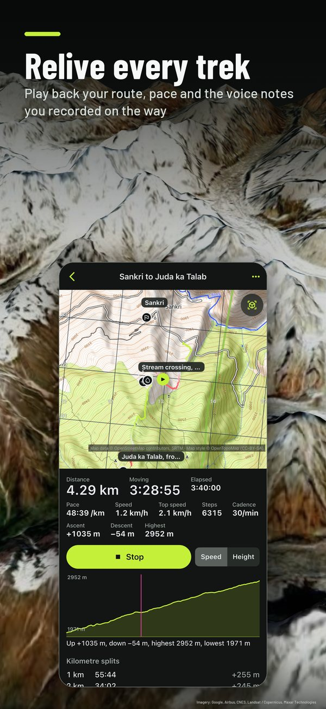

3D terrain
The ground in 3D from open elevation data, saved with your offline Areas. Google's photorealistic Earth view when you are online.

Trekker3D shows the ground in 3D, keeps the map with you offline, and reads your position as an Indian Grid reference, UTM or lat/long. When GPS drops, it keeps your place from steps and compass.
2D maps, Points, Routes, Measure, the grids, SOS and the Trek library are included. 3D, offline Areas, Tracks and position without GPS come with Access, a subscription with a 30-day free trial on the monthly plan.




The ground in 3D from open elevation data, saved with your offline Areas. Google's photorealistic Earth view when you are online.
OpenTopoMap's topographic sheet, OpenStreetMap's street map, or Google Maps in terrain or satellite view; online, satellite photos cover the 3D ground too. Layers add contours, hillshade, your own files and scanned maps, each with its own transparency.
Readouts, entry and grid lines in Indian Grid with 6, 8 or 10-figure GRs, plus UTM, MGRS and lat/long.
Download the map and elevation for an area and use both with no signal.
When the fix drops, steps and compass keep an estimate, drawn with its widening uncertainty.
Draw a Route, see its profile and ground distance, navigate it, and share it as a link or QR code.
Record the day with voice notes, photos and short videos, then replay it on the map.
Point at a summit in a first-person 3D view and name it.
Morse by torch or screen, your position as text, and a hand-off to Meshtastic.
45 well-known treks in 17 countries, with lines from OpenStreetMap and facts checked against two sources.
iOS 17 or later
iPadOS 17 or later, any window size
Phones, tablets and foldables
Four base maps: the OpenTopoMap topographic sheet, the OpenStreetMap street map, and Google Maps in terrain or satellite view. Switch in Settings › Map or in Base map & layers. With a connection, Google's satellite photos also cover the ground in 3D. Google's maps can't be saved for offline use; the topographic and street maps can. Every layer you add has its own transparency.
Included with the app: online 2D maps (OpenTopoMap, OpenStreetMap and Google's map), Points, Routes and navigation, Route sharing, Measure, the Indian Grid with GRs, UTM, MGRS and latitude and longitude, both SOS tools, browsing the Trek library, and viewing and replaying your past Tracks.
Access is a subscription, monthly or yearly. It adds 3D terrain and Earth view, offline Areas, position without GPS, Sighting, Track recording with voice notes, photos and videos, layers and custom imagery, GPX and bundle import and export, and Trek fly-throughs.
The monthly plan starts with a 30-day free trial for people who haven't had one. The yearly plan has no trial. The app shows the price before you buy, and whether the trial applies to you. After the trial, the monthly price, [PRICE], is charged unless you cancel before the trial ends.
On iPhone and iPad, cancel in your Apple Account's subscription settings at least 24 hours before the end of the current period. On Android, cancel in Google Play > Payments & subscriptions.
When Access ends, everything you saved stays on your device. You can still view your Points, Routes and Tracks, replay your Tracks, and export them. The app goes back to the Included features. Restore Purchases is on the Access sheet and in Settings.
Yes. Before you leave, download an Area: a region of map and elevation saved on your device. In that Area the map, its heights and the 3D terrain work with no signal at all. The Trek library and its lines are bundled in the app and need no connection.
The Earth view and Google's 2D map need a connection.
It is an estimate. When GPS drops, Trekker3D works out your position from your steps and the compass since the last Fix, and calls it an Estimate. The map draws it with a wedge that widens the longer GPS stays away, because the estimate grows less sure with every step. You can set your stride in Settings.
Treat the Estimate as a guide, check it against the ground, and carry a paper map and a compass.
Yes. Your position reads as an Indian Grid reference (Everest 1830 datum, Kalianpur zones), with 6, 8 or 10-figure GRs. Type a GR off your paper map into "Go to a place or GR" to go there, navigate to it, and turn on 1 km or 10 km grid lines. There is a mils option.
UTM, MGRS, and latitude and longitude in decimal degrees or degrees, minutes and seconds are also supported.
iPhone and iPad with iOS 17 or later. On a Mac, Trekker3D runs as the iPad app ("Designed for iPad"), with keyboard shortcuts: M to mark, R to route, S for SOS and T to tilt.
On Android it runs on phones, tablets and foldables, folded or open, and keeps itself up to date through Google Play.
Night turns the screen to one dim colour at minimum brightness so it doesn't spoil your eyes in the dark. Pick red (the default), amber or green. By day, choose Basalt (dark, the default) or Glacier (light).
No. There is no account and no sign-in. Apple or Google handles payment for Access, and the app receives only what you own and when it ends.
Your Points, Routes, Tracks, voice notes, photos and videos stay on your device. Trekker3D has no server and no analytics or advertising of its own.
To draw maps and heights, the app asks map and elevation services for the area you are looking at: OpenTopoMap and OpenStreetMap for tiles, Google Maps when you pick Google's map, AWS Terrain Tiles and OpenTopoData's public API for elevation, Google's Elevation API only while Google's map is on screen, and Google's 3D map when you open the Earth view. These requests reveal the area being viewed to the service that answers them, and carry no account or identifier from us.
When you use Google's map or the Earth view, the Google Maps SDK sends Google crash and performance data, a pseudonymous SDK identifier, request metadata (device model, OS version, SDK version), your IP address, and map interaction events such as panning and zooming. On Android, when you scan a Route's QR code, Google ML Kit reads the camera image on your device and sends Google device information, the app's package and version, per-installation identifiers, performance metrics and error codes. No other library in the app sends data.
The privacy policy has the details: https://devvratkalia.github.io/trekker3d/privacy.html
There is a fair-use allowance on each device. The Earth view can be opened 60 times a month per device. Google's Elevation API, used only for live profiles while Google's 2D map is shown, has an allowance of 500 requests a month per device; after that, the app shows a notice.
The 3D terrain map draws from open elevation data, not from the Earth view.
No. Trekker3D is a navigation aid, not a rescue service. The SOS tools (Morse by torch or screen, your position as text, a hand-off to the Meshtastic app) help you signal and share where you are. Carry a paper map and a compass, and tell someone your plan.
Open the Route and share it as a file, a link or a QR code. A link keeps the Route in the part of the address after "#", which browsers do not send to our website. Route sharing is included.
English and Hindi.
Email wekstuff@gmail.com. We read every message. Since we hold none of your data, we can't look anything up about you, so tell us your device and what you were doing.
In the app, go to Settings › Contact Support: it starts an email with the app version filled in. Or write to wekstuff@gmail.com. Tell us which device you use and what happened.
Your email is used only to reply to you.